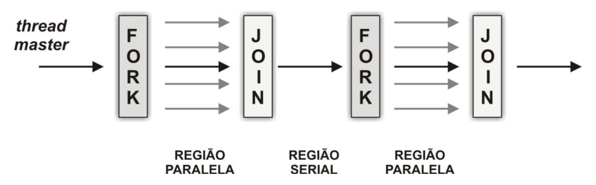
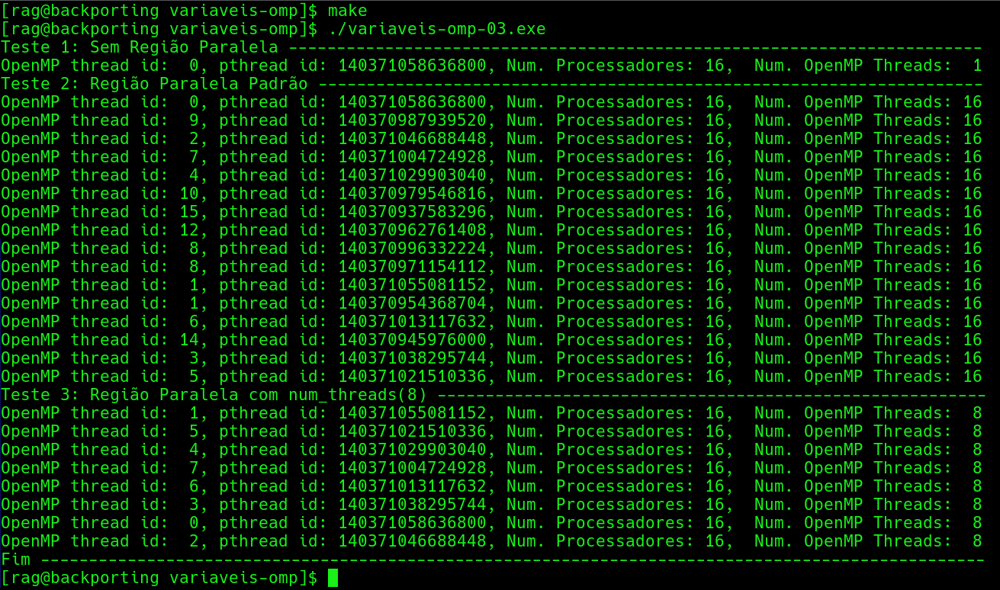
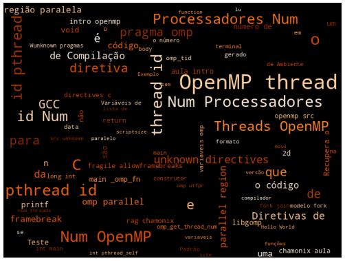

3 Introdução ao OpenMP: Diretivas de Compilação, Variáveis de Ambiente e Funções de Biblioteca
Resumo: Este capítulo apresenta conceitos fundamentais e introdutórios sobre o OpenMP, um padrão e API amplamente utilizados para explorar o potencial de processadores multicore em ambientes de memória compartilhada. Apresentamos o modelo de programação e modelo de execução
fork–join, controle dethreads, variáveis de ambiente e algumas funções das bibliotecas dos runtimes das implementações associadas aos principais compiladores atuais.
3.1 Introdução
Nas últimas décadas, a evolução da computação deixou de se concentrar apenas no aumento da frequência dos processadores e passou a investir na multiplicação de núcleos de processamento. Hoje, mesmo computadores pessoais e notebooks comuns contam com múltiplos cores, e servidores e supercomputadores chegam a ter dezenas ou centenas de núcleos trabalhando em conjunto. Essa mudança de paradigma exige que os programas sejam capazes de executar tarefas em paralelo, aproveitando ao máximo os recursos de hardware disponíveis.
O OpenMP (Open Multi-Processing) surge como uma solução prática e padronizada para explorar o paralelismo em sistemas de memória compartilhada. Trata-se de uma API amplamente utilizada, que permite adicionar paralelismo a programas escritos em C, C++ e Fortran de forma incremental, sem a necessidade de reescrever completamente o código. Seu modelo de programação é baseado no conceito fork–join, facilitando a adaptação de códigos sequenciais, permitindo ganhos de desempenho significativos com alterações relativamente pequenas.
O aprendizado do OpenMP é progressivo e incremental. Começando pela diretiva com o construtor de região paralela, depois pela divisão do trabalho entre as threads dentro dessa região paralela e na sequência paralelizando laços de repetição e avançando para outros construtores como os de tarefas independentes (tasks) e vetorização (SIMD).
3.2 Padrão OpenMP, compiladores, bibliotecas e Implementações
A abordagem do OpenMP é de mais alto nível, com uso de diretivas de compilação: instruções inseridas no código-fonte para indicar regiões paralelas. Funcionam como anotações que indicam seções paralelas do código sem a necessidade de reescrever toda a aplicação, permitindo testes e ajustes graduais. São implementadas usando-se as diretivas de pré-processamento #pragma, em C/C++, e sentinelas !$, no Fortran.
O modelo de programação do OpenMP trabalha em sistemas de memória compartilhada e é baseado no conceito fork–join: o programa inicia com uma única thread (master), que cria múltiplas threads para executar regiões paralelas (fork) explicitamente ou implicitamente. e, ao final, sincroniza todas elas (join).
O padrão OpenMP é suportado por praticamente todos os compiladores atuais: GCC (GNU Compiler Collection): suporte a OpenMP via -fopenmp; LLVM/Clang: suporte moderno com mais otimizações; Intel oneAPI / ICC: otimizações específicas para processadores Intel. IBM XL C/C++ e Fortran: suporte em sistemas de alto desempenho.
A utilização da biblioteca de OpenMP com a flag -fopenmp para C/C++ permite o acesso às seguintes funções:
int omp_get_thread_num(): retorna o identificador da thread.void omp_set_num_threads(int num_threads): indica o número de threads a executar na região paralela.int omp_get_num_threads(): retorna o número de threads que estão executando no momento.
Para a execução dos exemplos posteriores (construidos em C), será utilizado o compilador GCC com a flag -fopenmp, para facilitar as execuções, um exemplo de arquivo makefile é disponibilizado, onde name é a variável que define o nome do arquivo .c:
name=example
all:
gcc -fopenmp ${name}.c -o ${name}.exe
clean:
rm -rf *.o ${name}.exe3.3 Diretivas de Compilação
As diretivas são instruções especiais que informam ao compilador como paralelizar o código. São formadas por construtores e cláusulas, os quais podem definir o escopo de variáveis, regras de concorrência e algoritmos de escalonamento utilizado. Cada construtor possui diferentes cláusulas.
As principais diretivas são:
#pragma omp parallel: cria uma região paralela. Podendo conter cláusulas que definem o escopo de variáveis ou mesmo o número de threads para essa região.
Exemplo de utilização do construtor parallel com as funções da biblioteca omp, em uma região sem paralelismo, com paralelismo e paralilismo com número de threads definida:
#include <omp.h>
#include <stdio.h>
int main()
{
int i;
int omp_np; /* Número de Processadores. */
int omp_nt; /* Número de threads OpenMP. */
int omp_tid; /* Id da Thread OpenMP. */
/* Teste 1 (Sem utilização de paralelismo) */
printf("Teste 1 --------------------------------------------\n");
/* Traz os parâmetros do OpenMP utilizando as funções. */
omp_np = omp_get_num_procs(); /* Traz o número de processadores. */
omp_nt = omp_get_num_threads(); /* Traz o número de threads. */
omp_tid = omp_get_thread_num(); /* Traz o id da thread OpenMP. */
printf("Thread_id: %d #Processadores: %d #OpenMP Threads: %d\n", omp_tid, omp_np, omp_nt);
/* Teste 2 (Com utilização de paralelismo) */
printf("Teste 2 --------------------------------------------\n");
#pragma omp parallel
{
omp_np = omp_get_num_procs(); /* Traz o número de processadores. */
omp_nt = omp_get_num_threads(); /* Traz o número de threads. */
omp_tid = omp_get_thread_num(); /* Traz o id da thread OpenMP.*/
printf("Thread_id: %d #Processadores: %d #OpenMP Threads: %d\n", omp_tid, omp_np, omp_nt);
}
/* Teste 3 (Com utilização de paralelismo e controle do número de threads) */
printf("Teste 3 --------------------------------------------\n");
#pragma omp parallel num_threads(8)
{
omp_np = omp_get_num_procs(); /* Traz o número de processadores. */
omp_nt = omp_get_num_threads(); /* Traz o número de threads. */
omp_tid = omp_get_thread_num(); /* Traz o id da thread OpenMP. */
printf("Thread_id: %d #Processadores: %d #OpenMP Threads: %d\n", omp_tid, omp_np, omp_nt);
}
return 0;
}3.4 Objetivos
Uma visão geral sobre
OpenMP.Especificação x Implementações.
Ferramentas: Compiladores.
4 Abordagem do OpenMP
4.1 Vantagens do uso de OpenMP
- Poucas alterações no código serial existente.
- Fácil compreensão e uso das diretivas.
- Suporte a paralelismo aninhado.
- Ajuste dinâmico do número de threads. Criação de threads é incremental.
4.2 Padrão OpenMP
O
OpenMP(Chapman et al. 2007) é um padrão bem conhecido e amplamente utilizado em aplicações para plataformas multicore.O uso de Diretivas de Compilação.
O
OpenMPimplementa o modelofork-join.Múltiplas threads executam tarefas definidas implicitamente ou explicitamente.
As diretivas funcionam como anotações.
São implementadas usando-se as diretivas de pré-processamento
#pragma, emC/C++, e sentinelas!$, noFortran.Padrão
OpenMP(Open Multi-Processing) [Chapman et al. (2007)](OpenMP API Site 2020)- É Conjunto de diretivas de compilação mais um pequeno conjunto de funções de biblioteca e variáveis de ambiente que usam como base as linguagens
C/C++eFortran.
- É Conjunto de diretivas de compilação mais um pequeno conjunto de funções de biblioteca e variáveis de ambiente que usam como base as linguagens
As
diretivas de compilaçãosão usadas para anotar o código e guiar o compilador no processo de tradução e paralelização de código.Nas linguagens C e C++ as diretivas OpenMP são identificadas pelo #pragma omp, enquanto que na linguagem Fortran, as diretivas são identificadas pela sentinela !$omp.
O código anotado com diretivas de preprocessamento
(#pragma)é tratado e então o código paralelo é gerado.
4.3 OpenMP
- O OpenMP implementa o modelo
fork-join.

fork-join[framebreak]
fork-joinAs threads são criadas a partir de blocos de código anotados.
A master thread executa sequencialmente até encontrar a primeira construção que delimita uma região paralela.
Uma operação similar a um fork acontece, fazendo com que um time de threads seja criado para executar o bloco que representa a região paralela (a thread mestre participa do time).
4.4 Expansão das Diretivas de Compilação
As diretivas são substituídas pelo seu formato de código expandido com as chamadas para o runtime do
OpenMP.Nosso estudo foi baseado nas diretivas de compilação da biblioteca
libgomp(GNU Libgomp 2015) doGCC.A motivação desse estudo foi a necessidade de interceptar código de aplicações
OpenMPpara fazer offloading de código para aceleradores, comoGPU.
4.5 Sintaxe dos Elementos de OpenMP para C/C++.
- Variáveis de Ambiente:
OMP_NOME- São variáveis que controlam a execução do programa escrito com
OpenMP.
- São variáveis que controlam a execução do programa escrito com
- Diretivas de Compilação:
#pragma omp diretiva [cláusulas]- Instrui o compilador para processar a seção de código após a diretiva.
- Biblioteca e Rotinas:
omp_serviço(...)- Rotinas que manipulam e monitoram as threads, os processadores e as variáveis de ambiente. Existem rotinas para a sincronização das threads e para medir tempo.
4.6 Implementações OpenMP
O
OpenMPtem sido suportado por praticamente todos os compiladores atuais. OpenMP Compilers & Tools.Compiladores como
GCC(GCC 2020), Intelicc(Intel 2019) eLLVMclang(Clang 2013) tem implementações paraOpenMP.Pelo menos duas implementações:
GNU GCC libgomp(GNU Libgomp 2015) e aIntel libomp(OpenMP* Runtime Library) (Intel 2016).A especificação do
OpenMPatualmente cobre offloading de código para aceleradores.A
libgompé capaz de fazer offloading usando o padrãoOpenACC(Standard 2012).
5 Diretivas de Compilação
5.1 Diretivas de Compilação: Construtor Paralelo
(exemplo: hello-world)Construtor Paralelo:
#pragma omp parallelÉ a diretiva mais importante do
OpenMP.É responsável pela indicação da região do código que será executada em paralelo.
Se esse construtor não for especificado o programa será executado de forma sequencial.
Quando a thread inicial encontra um construtor paralelo ela cria um grupo de threads que irão executar o código e torna-se a thread mestre desse grupo.
Porém, esse construtor não divide o trabalho entre as threads, apenas cria a região paralela.
[framebreak]
[exampleblock]{Sintaxe}
#pragma omp parallel [clausula,...] novalinha
Instrucao ou Bloco de Comandos[/exampleblock]
[alertblock]{Cláusulas que podem ser utilizadas com esse construtor}
if (expressao logica)
private (lista de variaveis)
shared (lista de variaveis)
firstprivate (lista de variaveis)
default (shared | none)
copyin (lista de variaveis)
reduction (operador: lista de variaveis)
num_threads (variavel inteira)[/alertblock]
[framebreak]
- Hello World!!!
[columns]
[column=0.4]
#include <stdio.h>
int main() {
printf("Hello World!!!\n");
return 0;
}[column=0.6]
#include <stdio.h>
#include <omp.h>
int main() {
#pragma omp parallel
{
int id_omp = omp_get_thread_num();
long int id_sys = (long int) pthread_self();
printf("Thread[%d, %lu]: Hello World!!!\n", id_omp, id_sys);
}
return 0;
}[/columns]
[framebreak]
- Condicional de Compilação - Para tornar possível a compilação de um programa
OpenMPtanto na versão paralela quanto na versão sequencial.
#include <stdio.h>
#ifdef _OPENMP
#include <omp.h>
#else
#define omp_get_thread_num() 0
#endif
int main() {
#pragma omp parallel
{
int id_omp = omp_get_thread_num();
long int id_sys = (long int) pthread_self();
printf("Thread[%d, %lu]: Hello World!!!\n", id_omp, id_sys);
}
return 0;
}6 Variáveis de Ambiente
6.1 Variáveis de Ambiente do OpenMP
- Exemplo: variaveis-omp
int main() {
int i;
int omp_np; /* Número de Processadores. */
int omp_nt; /* Número de threads OpenMP. */
int omp_tid; /* Id da Thread OpenMP. */
/* Teste 1 */
printf("Teste 1: Sem Região Paralela ------------------------------------------------------------------------\n");
/* Recupera os parâmetros do OpenMP utilizando as funções. */
omp_np = omp_get_num_procs(); /* Recupera o número de processadores. */
omp_nt = omp_get_num_threads(); /* Recupera o número de threads. */
omp_tid = omp_get_thread_num(); /* recupera o id da thread OpenMP. */
printf("OpenMP thread id: %2d, pthread id: %lu, Num. Processadores: %2d, Num. OpenMP Threads: %2d\n", omp_tid, (long int) pthread_self(), omp_np, omp_nt);
/* Teste 2 */
printf("Teste 2: Região Paralela Padrão ---------------------------------------------------------------------\n");
#pragma omp parallel
{
omp_np = omp_get_num_procs(); /* Recupera o número de processadores. */
omp_nt = omp_get_num_threads(); /* Recupera o número de threads. */
omp_tid = omp_get_thread_num(); /* recupera o id da thread OpenMP.*/
printf("OpenMP thread id: %2d, pthread id: %lu, Num. Processadores: %2d, Num. OpenMP Threads: %2d\n", omp_tid, (long int) pthread_self(), omp_np, omp_nt);
}
/* Teste 3 */
printf("Teste 3: Região Paralela com num_threads(8) ---------------------------------------------------------\n");
#pragma omp parallel num\_threads(8)
{
omp_np = omp_get_num_procs(); /* Recupera o número de processadores. */
omp_nt = omp_get_num_threads(); /* Recupera o número de threads. */
omp_tid = omp_get_thread_num(); /* recupera o id da thread OpenMP. */
printf("OpenMP thread id: %2d, pthread id: %lu, Num. Processadores: %2d, Num. OpenMP Threads: %2d\n", omp_tid, (long int) pthread_self(), omp_np, omp_nt);
}
printf("Fim --------------------------------------------------------------------------------------------------\n");
return 0;
}[framebreak]

7 Diretivas de Compilação
7.1 …
Diretivas de Compilação e Código OpenMP Expandido
(Formato pós expansão das diretivas)
LibGOMP:
GNU Offloading and Multi Processing Runtime Library – (GNU OpenMP Runtime Library)
7.2 Estudo das Diretivas de Compilação
Verificou-se o formato de código gerado pelo
GCC+libgomppara os construtores de regiões paralelas (parallel region) e compartilhamento de trabalho (parallel for).O código foi gerado nas versões do
GCC(4.8, 4.9, 5.3, 6.1) para verificarmos o formato interceptável.Adotamos o
GCC 4.8, porque esta versão apresentar um formato mais consistente e definido que possibilita a interceptação.
7.3 Regiões paralelas: construtor parallel
- Esta é uma das mais importantes diretivas, pois ela é responsável pela demarcação de regiões paralelas.
[exampleblock]{Regiões paralelas são criadas usando-se o construtor}
#pragma omp parallel [clause[ [,] clause] ... ] new-line
{
/* Bloco estruturado. */
}[/exampleblock]
Quando uma região paralela é encontrada, é criado um time de threads para executar o código da região.
Porém, esse construtor não divide o trabalho entre as threads.
[framebreak]
- Quando a diretiva de região paralela é utilizada:
#pragma omp parallel
{
// body;
}A diretiva parallel é implementada com a criação de uma nova função (outlined function) usando o código contido em
body.A
libgompusa funções para delimitar a região. Chamadas a essas funções são colocadas no código para indicar o início e o fim de uma região paralela:
[alertblock]{The libgomp ABI}
void GOMP_parallel_start(void (*fn)(void *), void *data,
unsigned num_threads)
void GOMP_parallel_end(void)[/alertblock]
- O código expandido gerado assume o formato:
void subfunction (void *data){
use data;
body;
}
// replace the annotated parallel region.
setup data;
GOMP_parallel_start(subfunction, &data, num threads);
subfunction(&data);
GOMP_parallel_end();[framebreak]
- Exemplo: parallel-region
#include <omp.h>
int main (void) {
#pragma omp parallel
{
// body.
}
return 0;
}[framebreak]
- Utilizando o
GCCcom a opção para manter os arquivos intermediários doOpenMP(-fopenmp -fdump-tree-ompexp):
[terminal] aula-intro-openmp/src/parallel-region$ gcc -O0 -fopenmp -fdump-tree-ompexp parallel-region.c aula-intro-openmp/src/parallel-region$ [/terminal]
[framebreak]
- O código em
GIMPLE, que é a representação intermediária doGCC:
main._omp_fn.0 (void * .omp_data_i) {
return;
}
main () {
int D.1803;
<bb 2>:
__builtin_GOMP_parallel_start (main._omp_fn.0, 0B, 0);
main._omp_fn.0 (0B);
__builtin_GOMP_parallel_end ();
D.1803 = 0;
<L0>:
return D.1803;
}[framebreak]
- O código em assembly pode ser gerado com o parâmetros
-S:
[terminal] aula-intro-openmp/src/parallel-region$ gcc -O0 -fopenmp -fdump-tree-ompexp parallel-region.c -S -o parallel-region.asm aula-intro-openmp/src/parallel-region$ [/terminal]
.file "parallel-region.c"
.text
.globl main
.type main, @function
main:
pushq %rbp
movq %rsp, %rbp
movl $0, %edx
movl $0, %esi
movl $main._omp_fn.0, %edi
call GOMP_parallel_start
movl $0, %edi
call main._omp_fn.0
call GOMP_parallel_end
movl $0, %eax
popq %rbp
ret
.size main, .-main
.type main._omp_fn.0, @function
main._omp_fn.0:
pushq %rbp
movq %rsp, %rbp
movq %rdi, -8(%rbp)
popq %rbp
ret
.size main._omp_fn.0, .-main._omp_fn.0
.ident "GCC: (Debian 4.8.4-1) 4.8.4"
.section .note.GNU-stack,"",@progbits7.4 Outras Flags Úteis
Vimos que uma das vantagens do uso de diretivas de compilação é que o código anotado ao ser compilado sem a flag -fopenmp faz com que o compilador (GCC, clang ou icx) ignore as diretivas e o código sequencial seja gerado.
Pode acontecer também do compilador não ter aquela diretiva implementada, por exemplo o GCC em uma versão antiga poderia não conhecer uma data diretiva atual, como a target para aceleradores. O código seria gerado sem considerar a diretiva, não gerando a versão do código para GPU, deixando o usuário pensar que a versão paralela havia sido gerada e de fato não foi.
O GCC tem uma flag -Wunknown-pragmas que instrui o compilador a emitir uma mensagem caso encontre alguma diretiva de pré-processamento não conhecida.
O exemplo unknown-directives apresentado também no Código 7.I mostra duas diretivas uma existente (parallel) e outra que não existe no OpenMP, a diretiva com o construtor utfpr.
unknown-directives.c
#include <omp.h>
int main(int argc, char *argv[]) {
#pragma omp parallel num_threads(4)
{
// body.
}
#pragma omp utfpr
{
// body.
}
return 0;
}Para compilar o exemplo do Código 7.II, podemos utilizar o compilador gcc ou o clang, o programa deve ser compilado com as flags -fopenmp e -Wunknown-pragmas, o GCC acusará que não conhece a diretiva omp com o construtor utfpr e irá ignorá-la, enquanto que o clang irá acusar um erro, pois não conhece a diretiva.
Terminal
[unknown-directives]$ gcc -fopenmp -Wunknown-pragmas unknown-directives.c -o unknown-directives.exe
unknown-directives.c: In function ‘main’:
unknown-directives.c:10: warning: ignoring ‘#pragma omp utfpr’ [-Wunknown-pragmas]
10 | #pragma omp utfpr
[unknown-directives]$ clang -fopenmp -Wunknown-pragmas unknown-directives.c -o unknown-directives.exe
unknown-directives.c:10:13: error: expected an OpenMP directive
10 | #pragma omp utfpr
| ^
1 error generated.
[unknown-directives]$ Outro ponto interessante é que sem a flag -fopenmp ligada, até mesmo as diretivas existentes no OpenMP tornam-se desconhecidas para o compilador, conforme apresentado no exemplo Código 7.III.
Terminal
[unknown-directives]$ gcc -Wunknown-pragmas unknown-directives.c -o unknown-directives.exe
unknown-directives.c: In function ‘main’:
unknown-directives.c:5: warning: ignoring ‘#pragma omp parallel’ [-Wunknown-pragmas]
5 | #pragma omp parallel num_threads(4)
unknown-directives.c:10: warning: ignoring ‘#pragma omp utfpr’ [-Wunknown-pragmas]
10 | #pragma omp utfpr
[unknown-directives]$ clang -Wunknown-pragmas unknown-directives.c -o unknown-directives.exe
[unknown-directives]$7.5 Considerações Finais
O OpenMP permite identificar oportunidades de paralelismo, dividir o trabalho de forma equilibrada, sincronizar apenas quando necessário e medir continuamente o impacto das mudanças dentro do código. Sendo flexível e portátil, ele permite que você comece paralelizando um único laço e avançando para arquiteturas mais complexas, ajustando scheduling, explorando tarefas independentes e combinando paralelismo com outras técnicas de otimização.
O próximo passo é continuar testando diferentes configurações, medindo resultados, identificando gargalos e refinando o código. A prática constante e a análise crítica são as chaves para dominar o OpenMP e, mais amplamente, a programação paralela.
7.6 Word Cloud

Referências
Tutorial de OpenMP C/C++: http://www.lncc.br/pdf_consultar.php?idt_arquivo=4286
Notas de Aulas.